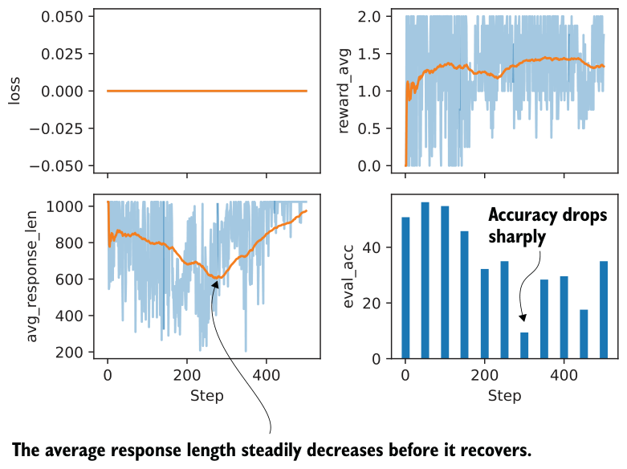
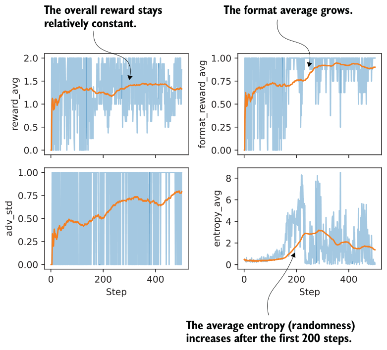

7.6.2Training a model to emit <think> tokens
The modifications needed to train a reasoning model with a formatting reward are implemented in a script that you can download:
download_from_github(
"ch07/03_rlvr_grpo_scripts_advanced/7_6_plus_format_reward.py"
)There are a few caveats to keep in mind about this script. For instance, if we train the base model with the modified prompt to emit <think> and </think> tokens, as shown in listing 7.14, the results would be poor because the base model has never seen these tokens before. The proper way to introduce these new tokens would be to pretrain or instruction fine-tune the model on data that includes <think> and </think> tokens (instruction fine-tuning is covered in the next chapter).
In this chapter, where we are focusing on reinforcement learning, we’ll train the existing reasoning variant of the model, which is already familiar with <think> tokens. This is the same reasoning variant we introduced in chapter 3.
You can run the script as follows:
uv run 7_6_plus_format_reward.py \
--steps 500 \
--max_new_tokens 1024Note that this script is already configured to use the reasoning model variant instead of the base model.
You can download a log file of this run for further analysis, because running the experiment can be resource intensive and expensive:
download_from_github(
"ch07/02_logs/7_6_plus_format_reward_metrics.csv"
)
plot_grpo_metrics(
"7_6_plus_format_reward_metrics.csv",
columns=["loss", "reward_avg", "avg_response_len", "eval_acc"]
)The resulting plot is shown in figure 7.19. As you can see, the model improves at first but then gets worse in terms of evaluation accuracy, while the average reward stays approximately constant. The decline in evaluation accuracy appears to correlate with the shorter response lengths the model produces after that point.

To investigate this further, let’s look at some additional metrics:
plot_grpo_metrics(
"7_6_plus_format_reward_metrics.csv",
columns=["reward_avg", "format_reward_avg", "adv_std", "entropy_avg"],
)The results are shown in figure 7.20. One possible explanation for the declining model performance is that the model receives too much reward simply for following the <think> tag format, as shown in the format_reward_avg plot. In other words, the model does not focus enough on answer correctness (as reflected by the drop in eval_acc despite the high reward_avg).
One way to address this is to reduce the strength of the format reward, such as by lowering the default format_reward_weight from 1.0 to 0.1. Another option is to make the format reward conditional so it is applied only when the answer is also correct. In the current setup, the format reward is granted regardless of correctness.
A note on loss and kl_loss
7_6_plus_format_reward.py with the default settings --kl_ coeff 0.0 and --inner_epochs 1. Because --kl_coeff is set to 0.0, the KL penalty is disabled, so the logged kl_loss remains 0 throughout the run.uv run 7_6_plus_format_reward.py \
--steps 500 \
--max_new_tokens 1024 \
--kl_coeff 0.001 \
--inner_epochs 2loss (figure 7.19) is also 0 with the default 7.6 settings. This happens because the run uses only one inner update (--inner_epochs 1) and compares the model against a copy of itself from the same step. As a result, the policy ratio starts at 1, and because the advantages are normalized to have a mean of 0, the scalar policy loss evaluates to 0. So in this case, loss = 0 is a computational artifact caused by the default settings. It mainly reflects that the run uses a single inner epoch and no KL term, which makes the logged scalar loss uninformative. The more useful quantities to monitor here are metrics such as reward_avg, format_reward_avg, adv_std, and entropy_avg.
Exercise 7.2: Making the format reward conditional
reward = rlvr_reward + format_reward_weight * format_rewardrlvr_reward) is nonzero. Repeat the training run with the conditional format reward. Does conditioning the format reward change training behavior and final accuracy? Note: Because running these experiments can be resource intensive, reference results are provided in appendix B.